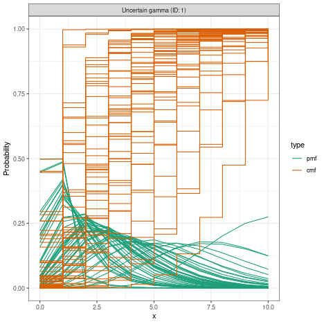

Workflow for Rt estimation and forecasting
Source:vignettes/estimate_infections_workflow.Rmd
estimate_infections_workflow.RmdThis vignette describes the typical workflow for estimating reproduction numbers and performing short-term forecasts for a disease spreading in a given setting using EpiNow2. The vignette uses the default non-stationary Gaussian process model included in the package. See other vignettes for a more thorough exploration of alternative model variants and theoretical background.
Data
Obtaining a good and full understanding of the data being used is an
important first step in any inference procedure such as the one applied
here. EpiNow2 expects data in the format of a data frame with
two columns, date and confirm, where
confirm stands for the number of reports - which could be
confirmed case counts although in reality this can be applied to any
data including suspected cases and lab-confirmed outcomes. The user
might already have the data as such a time series provided, for example,
on public dashboards or directly from public health authorities.
Alternatively, they can be constructed from individual-level data, for
example using the incidence2 R
package. An example data set called example_confirmed is
included in the package:
head(EpiNow2::example_confirmed)
#> date confirm
#> <Date> <num>
#> 1: 2020-02-22 14
#> 2: 2020-02-23 62
#> 3: 2020-02-24 53
#> 4: 2020-02-25 97
#> 5: 2020-02-26 93
#> 6: 2020-02-27 78Any estimation procedure is only as good as the data that feeds into it. A thorough understanding of the data that is used for EpiNow2 and its limitations is a prerequisite for its use. This includes but is not limited to biases in the population groups that are represented (EpiNow2 assumes a closed population with all infections being caused by other infections in the same population), reporting artefacts and delays, and completeness of reporting. Some of these can be mitigated using the routines available in EpiNow2 as described below, but others will cause biases in the results and need to be carefully considered when interpreting the results.
Set up
We first load the EpiNow2 package.
library("EpiNow2")
#>
#> Attaching package: 'EpiNow2'
#> The following object is masked from 'package:stats':
#>
#> GammaWe then set the number of cores to use. We will want to run 4 MCMC chains in parallel so we set this to 4.
options(mc.cores = 4)If we had fewer than 4 available or wanted to run fewer than 4 chains
(at the expense of some robustness), or had fewer than 4 computing cores
available we could set it to that. To find out the number of cores
available one can use the detectCores
function from the parallel package.
Parameters
Once a data set has been identified, a number of relevant parameters need to be considered before using EpiNow2. As these will affect any results, it is worth spending some time investigating what their values should be.
Delay distributions
EpiNow2 works with different delays that apply to different
parts of the infection and observation process. They are defined using a
common interface that involves functions that are named after the
probability distributions, i.e. LogNormal(),
Gamma(), etc. For help with this function, see its manual
page
?EpiNow2::DistributionsIn all cases, the distributions given can be fixed (i.e. have no uncertainty) or variable (i.e. have associated uncertainty). For example, to define a fixed gamma distribution with mean 3, standard deviation (sd) 1 and maximum value 10, you would write
fixed_gamma <- Gamma(mean = 3, sd = 1, max = 10)
fixed_gamma
#> - gamma distribution (max: 10):
#> shape:
#> 9
#> rate:
#> 3which looks like this when plotted
plot(fixed_gamma)If distributions are variable, the values with uncertainty are treated as prior probability densities in the Bayesian inference framework used by EpiNow2, i.e. they are estimated as part of the inference. For example, to define a variable gamma distribution where uncertainty in the shape is given by a normal distribution with mean 3 and sd 2, and uncertainty in the rate is given by a normal distribution with mean 1 and sd 0.1, with a maximum value 10, you would write
uncertain_gamma <- Gamma(shape = Normal(3, 2), rate = Normal(1, 0.1), max = 10)
uncertain_gamma
#> - gamma distribution (max: 10):
#> shape:
#> - normal distribution:
#> mean:
#> 3
#> sd:
#> 2
#> rate:
#> - normal distribution:
#> mean:
#> 1
#> sd:
#> 0.1which looks like this when plotted
plot(uncertain_gamma) There are various ways the
specific delay distributions mentioned below might be obtained. Often,
they will come directly from the existing literature reviewed by the
user and studies conducted elsewhere. Sometimes it might be possible to
obtain them from existing databases, e.g. using the epiparameter R
package. Alternatively they might be obtainable from raw data,
e.g. line-listed individual-level records. The EpiNow2 package
contains functionality for estimating delay distributions from observed
delays in the estimate_delay() function. For a more
comprehensive treatment of delays and their estimation avoiding common
biases one can also consider the epidist R
package.
Generation intervals
The generation interval is a delay distribution that describes the
amount of time that passes between an individual becoming infected and
infecting someone else. In EpiNow2, the generation time
distribution is defined by a call to gt_opts(), a function
that takes a single argument defined as a dist_spec object
(returned by the function corresponding to the probability distribution,
i.e. LogNormal(), Gamma(), etc.). For example,
to define the generation time as gamma distributed with uncertain mean
centered on 3 and sd centered on 1 with some uncertainty, a maximum
value of 10 and weighted by the number of case data points we could use
the shape and rate parameters suggested above (though notes that this
will only very approximately produce the uncertainty in mean and
standard deviation stated there):
Reporting delays
EpiNow2 calculates reproduction numbers based on the
trajectory of infection incidence. Usually this is not observed
directly. Instead, we calculate case counts based on, for example, onset
of symptoms, lab confirmations, hospitalisations, etc. In order to
estimate the trajectory of infection incidence from this we need to
either know or estimate the distribution of delays from infection to
count. Often, such counts are composed of multiple delays for which we
only have separate information, for example the incubation period (time
from infection to symptom onset) and reporting delay (time from symptom
onset to being a case in the data, e.g. via lab confirmation, if counts
are not by the date of symptom onset). In this case, we can combine
multiple delays with the plus (+) operator, e.g.
incubation_period <- LogNormal(
meanlog = Normal(1.6, 0.05),
sdlog = Normal(0.5, 0.05),
max = 14
)
reporting_delay <- LogNormal(meanlog = 0.5, sdlog = 0.5, max = 10)
combined_delays <- incubation_period + reporting_delay
combined_delays
#> Composite distribution:
#> - lognormal distribution (max: 14):
#> meanlog:
#> - normal distribution:
#> mean:
#> 1.6
#> sd:
#> 0.05
#> sdlog:
#> - normal distribution:
#> mean:
#> 0.5
#> sd:
#> 0.05
#> - lognormal distribution (max: 10):
#> meanlog:
#> 0.5
#> sdlog:
#> 0.5We can visualise this combined delay
plot(combined_delays)In EpiNow2, the reporting delay distribution is defined by a
call to delay_opts(), a function that takes a single
argument defined as a dist_spec object (returned by
LogNormal(), Gamma() etc.). For example, if
our observations were by symptom onset we would use
delay_opts(incubation_period)If they were by date of lab confirmation that happens with a delay
given by reporting_delay, we would use
delay <- incubation_period + reporting_delay
delay_opts(delay)Truncation
Besides the delay from infection to the event that is recorded in the data, there can also be a delay from that event to being recorded in the data. For example, data reported by symptom onset may only become part of the dataset once lab confirmation has occurred, or even a day or two after that confirmation. Statistically, this means our data is right-truncated. In practice, it means that recent data will be unlikely to be complete.
The amount of such truncation that exists in the data can be
estimated from multiple snapshots of the data, i.e. what the data looked
like at multiple past dates. One can then use methods that use the
amount of backfilling that occurred 1, 2, … days after data for a date
are first reported. In EpiNow2, this can be done using the
estimate_truncation() method which returns, amongst others,
posterior estimates of the truncation distribution. For more details on
the model used for this, see the estimate_truncation vignette.
?estimate_truncationIn the estimate_infections() function, the truncation
distribution is defined by a call to trunc_opts(), a
function that takes a single argument defined as a
dist_spec (either defined by the user or obtained from a
call to estimate_truncation() or any other method for
estimating right truncation). This will then be used to correct for
right truncation in the data.
The separation of estimation of right truncation on the one hand and estimation of the reproduction number on the other may be attractive for practical purposes but is questionable statistically as it separates two processes that are not strictly separable, potentially introducing a bias. An alternative approach where these are estimated jointly is being implemented in the epinowcast package, which is being developed by the EpiNow2 developers with collaborators.
Completeness of reporting
Another issue affecting the progression from infections to reported
outcomes is underreporting, i.e. the fact that not all infections are
reported as cases. This varies both by pathogen and population (and
e.g. the proportion of infections that are asymptomatic) as well as the
specific outcome used as data and where it is located on the severity
pyramid (e.g. hospitalisations vs. community cases). In EpiNow2
we can specify the proportion of infections that we expect to be
observed (with uncertainty assumed represented by a truncated normal
distribution with bounds at 0 and 1) using the scale
argument to the obs_opts() function. For example, if we
think that 40% (with standard deviation 1%) of infections end up in the
data as observations we could specify.
Initial reproduction number
The default model that estimate_infections() uses to
estimate reproduction numbers requires specification of a prior
probability distribution for the initial reproduction number. This
represents the user’s initial belief of the value of the reproduction
number, where there is no data yet to inform its value. By default this
is assumed to be represented by a lognormal distribution with mean and
standard deviation of 1. It can be changed using the
rt_opts() function. For example, if the user believes that
at the very start of the data the reproduction number was 2, with
uncertainty in this belief represented by a standard deviation of 1,
they would use
Weighing delay priors
When providing uncertain delay distributions one can end up in a
situation where the estimated means are shifted a long way from the
given distribution means, and possibly further than is deemed realistic
by the user. In that case, one could specify narrower prior
distributions (e.g., smaller mean_sd) in order to keep the
estimated means closer to the given mean, but this can be difficult to
do in a principled manner in practice. As a more straightforward
alternative, one can choose to weigh the generation time priors by the
number of data points in the case data set by setting
weigh_delay_priors = TRUE (the default).
Estimation and forecasting
All the options are combined in a call to the
estimate_infections() function. For example, using some of
the options described above one could call
reported_cases <- example_confirmed[1:60]
def <- estimate_infections(
reported_cases,
generation_time = gt_opts(generation_time),
delays = delay_opts(delay),
rt = rt_opts(prior = rt_prior),
forecast = forecast_opts(horizon = 7)
)Alternatively, for production environments, we recommend using the
epinow() function. It uses
estimate_infections() internally and provides functionality
for logging and saving results and plots in dedicated directories in the
user’s file system.
Forecasting secondary outcomes
The estimate_infections() function works with a single
time series of outcomes such as cases by symptom onset or
hospitalisations. Sometimes one wants to further create forecasts of
other secondary outcomes such as deaths. The package contains
functionality to estimate the delay and scaling between multiple time
series with the estimate_secondary() function, as well as
for using this to make forecasts with the
forecast_secondary() function.
Interpretation
To visualise the results one can use the plot() function
that comes with the package
plot(def)
The results returned by the estimate_infections model
depend on the values assigned to all to parameters discussed in this
vignette, i.e. delays, scaling, and reproduction numbers, as well as the
model variant used and its parameters. Any interpretation of the results
will therefore need to bear these in mind, as well as any properties of
the data and/or the subpopulations that it represents. See the Model options vignette for
an illustration of the impact of model choice.
Evaluating forecasts with scoringutils
Forecast evaluation is useful for comparing the predictive
performance of different models or assessing how accuracy changes at
different forecast horizons. The get_predictions() function
supports a format = "sample" argument to return raw
posterior samples compatible with the scoringutils
package.
Since we fitted on only the first 60 days of
example_confirmed, we can score the 7-day forecast against
the full dataset. Here we show forecast scores by horizon:
library(scoringutils)
# Get sample-based predictions for the forecast period
preds <- get_predictions(def, format = "sample")
forecasts <- preds[horizon > 0]
# Add observed data
forecasts <- merge(forecasts, example_confirmed, by = "date")
# Score forecasts by horizon
forecast_obj <- as_forecast_sample(
forecasts,
forecast_unit = "horizon",
observed = "confirm",
sample_id = "sample"
)
score(forecast_obj)
#> horizon bias dss crps overprediction underprediction dispersion
#> <num> <num> <num> <num> <num> <num> <num>
#> 1: 1 -0.6505 13.31003 305.8814 0.000 190.593 115.2884
#> 2: 2 -0.8755 15.26973 657.2073 0.000 529.589 127.6183
#> 3: 3 0.2560 13.38751 190.0780 28.593 0.000 161.4850
#> 4: 4 -0.5490 13.53322 317.1630 0.000 166.370 150.7930
#> 5: 5 0.3910 13.79891 254.7470 70.291 0.000 184.4560
#> 6: 6 0.1640 13.68110 204.2124 12.438 0.000 191.7744
#> 7: 7 0.4320 13.76404 252.2392 78.715 0.000 173.5242
#> log_score mad ae_median se_mean
#> <num> <num> <num> <num>
#> 1: 7.756721 475.1733 528.5 220416.63
#> 2: 8.763339 539.6664 990.0 850682.48
#> 3: 7.476291 688.6677 211.0 87562.73
#> 4: 7.945295 643.4484 543.0 203621.15
#> 5: 7.620958 768.7281 354.5 224057.86
#> 6: 7.573535 795.4149 146.5 89926.22
#> 7: 7.522562 733.8870 363.5 246446.22